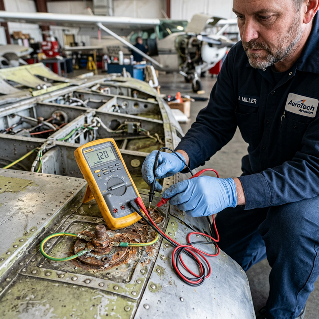

Voltage drop & resistance clues
Module Objectives
- Define voltage drop and explain its relationship to resistance in a wiring path.
- Identify common physical causes of excessive voltage drop in aircraft wiring.
- Explain why the ground return path must be tested during voltage drop troubleshooting.
Why Does This Matter?

A newly installed transponder works intermittently. You measure the aircraft bus — it is perfectly healthy at 28.0V. You pull the radio tray out and measure the power pin at the back of the tray — it reads 25.5V. You have a 2.5-volt drop. Where did the voltage go? It was consumed by excessive resistance in the wiring path (likely a bad crimp or a corroded ground). Mastering voltage drop is the single most powerful diagnostic skill an avionics technician can possess.
What You Need To Know
What Is Voltage Drop?
Voltage drop is the exact reduction in voltage between the power source and the load end. It is caused by unintended electrical resistance somewhere in the physical wiring path. Using Ohm's Law:
V_drop = I × R_path
Even tiny amounts of unexpected physical resistance create significant, measurable voltage drops because aircraft systems draw high current. A 0.5Ω resistance (a slightly loose screw) in a wire carrying 6 amps creates a 3-volt drop before the power ever reaches the component.
Common Physical Causes of Voltage Drop
- Corroded connector pins — Oxidation acts as an insulator, drastically increasing contact resistance.
- Loose ring terminals — Incomplete surface contact reduces the path diameter, increasing resistance.
- Bad splices — Poorly crimped barrels or cold-soldered joints add parasitic resistance.
- Undersized wire — Wire that is too thin for the required current load has higher natural resistance per foot.
The Ground Return Trap
The most commonly missed diagnostic step in aviation: Voltage drop can occur in any part of the total circuit loop, including the ground path. In a single-wire system, the airframe is the negative wire. A corroded aluminum ground point causes the exact same voltage drop symptoms as a corroded positive supply wire. You must check the entire path from source out to load, and from load back to the battery negative.
Recognizing Voltage Drop Symptoms
- Dim lighting — The bulb illuminates, but at less than full intensity because it is receiving 22V instead of 28V.
- Slow motors — Flap or trim motors run sluggishly.
- Intermittent avionics resets — Radios reboot automatically when transmitting, because transmitting draws heavy current, which spikes the voltage drop, dipping the radio input voltage below its operational minimum threshold.
System Visualization
graph TD
A[28V Bus] --> B[Supply Wire 0.05 ohms]
B --> C((Corroded Connector 0.5 ohms))
C --> D[Avionics Load draws 5 Amps]
D --> E[Clean Ground 0.05 ohms]
C -.->|Vdrop = I x R | F[5A * 0.5 ohms = 2.5V lost at connector]
F -.-> G[Avionics only receives 25.5V]
style C fill:#991b1b,stroke:#7f1d1d,stroke-width:2px,color:#fff
style G fill:#b45309,stroke:#78350f,stroke-width:2px,color:#fff
On The Job
When a component works, but poorly (dim, slow, erratic) — immediately measure voltage at the bus, then measure voltage at the component connector. If there is a measurable difference greater than 0.5V, you absolutely have a voltage drop fault. Trace the harness path visually. Inspect every bulkhead connector, terminal strip, and ground lug between those two measurement points.
Reference Terms
Fluctuating milliohmmeter reading
An unstable or fluctuating milliohmmeter reading on a bonding strap indicates a poor, intermittent contact — almost always caused by corrosion or contamination at one or both attachment points. Correct action: inspect, clean, and re-measure.
Lower-than-expected voltage across load
If voltage at a load is lower than expected, excessive resistance upstream is consuming voltage (V=IR voltage drop). Causes: corroded connections, undersized wire, loose terminals. The extra resistance steals voltage from the load.
Voltage drop — cause
A voltage drop between source and load is caused by resistance in the wiring path: V_drop = I × R_wire. Common sources: corroded connectors, undersized wire, loose terminals, bad splices. Even small resistance creates measurable drops at normal aircraft current levels.
Dim lights — voltage drop diagnosis
Dim bulbs in a lighting circuit indicate reduced voltage at the bulb — caused by excessive resistance upstream stealing voltage (V=IR drop). Common causes: corroded connectors, loose terminals, undersized wire, or a poor ground return.
0.5V drop — ground return included
A 0.5V drop can occur anywhere in the complete circuit loop: supply wiring, connectors, AND the ground return path. Don't forget that the ground wire and ground connections also have resistance. A bad ground creates the same voltage drop symptom as a bad supply wire.
Voltage Drop
The loss of voltage along a wiring path due to unintended resistance, calculated by V_drop = I × R.
Contact Resistance
The localized resistance at a mechanical connection point (pin, terminal, or lug) caused by corrosion, contamination, or insufficient torque.
Ground Return
The negative side of the circuit path (often the aluminum airframe); it is equally susceptible to voltage drop issues as the positive supply line.
Assessment Check
Voltage drop is the result of physical resistance in the wiring path stealing voltage from your load — when diagnosing dim lights or rebooting radios, always check splices, connectors, AND the ground return. --- ---